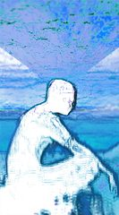

Le Filtre
Variante archivée. L’article associé utilise une autre image ou une animation.
Ouvrir l’imageFichiers conservés
quanta3


Informations du fichier
- Nom conservé
- quanta3.jpg
- Taille
- 406,255 octets
- SHA-256
- b8455aaaa115fb39732465f94faef36ddf7f659be55882b4a4d791448c631eb9